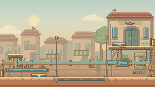
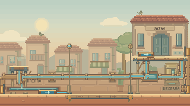

Da saída do cano à água recebida.
Uma nova revisão dos bocais, das bacias e dos últimos respingos. O foco está nos encontros entre água e construção, e na clareza ao fechar ou reabrir um registro.
Bica pública · Queda e apoio no piso
A bacia ganhou pés sobre a praça, uma borda escura e espaço para enxergar a água saindo do bocal. Reflexos descem pelo filete e pequenas ondas partem do ponto onde ele encontra a água. O ramal continua fechado até a liberação real.


Antes à esquerda, depois à direita; detalhe ampliado abaixo. Vídeos a 30 fps, sem áudio, com 8,4 segundos cada.
Estudo de arte da praça. A liberação é posicionada em 1,5 s para comparar os dois estados; não é uma partida.

Leitura preservada
Os respingos residuais ficam dentro das saídas, sem cobrir as margens. A água que causa dano continua preenchendo exatamente a área de perigo. Pausa e movimento reduzido são respeitados; o manômetro e os avisos continuam mostrando o estado real da pressão.
O visor da reserva também recebeu um reflexo que entra e sai pelas bordas, sem saltar do fundo para o topo.
Integração nos percursos
Oito partidas completas com os comandos normais foram comparadas com a versão anterior. Todas chegaram ao final sem dano e mantiveram os mesmos estados amostrados, posições, câmera, duração e moedas.


Verificação
3.763 testes TypeScript aprovados, zero falhas e um caso opcional ignorado; três testes JavaScript, validadores e build aprovados. Oito novos casos verificam os resíduos, a continuidade das saídas, os apoios, a grade e o visor. A campanha normal concluiu nove execuções; os quatro vídeos foram conferidos em 1440 e 390 pixels.